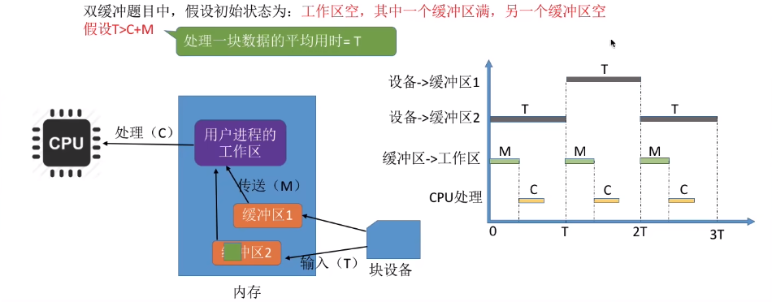

I/O 管理基础
I/O 设备
I/O 设备管理是操作系统设计中最凌乱也最具挑战性的部分。由于它包含了很多领域的不同设备及与设备相关的应用程序，因此很难有一个通用且一致的设计方案。
I/O 设备分类
I/O 设备是指可以将数据输入计算机的外部设备，或者可以接收计算机输出数据的外部设备。I/O 设备的类型繁多，从不同的角度可将它们分为不同的类型。
I/O 接口
I/O 接口（又称设备控制器）是 CPU 与设备之间的接口，以实现设备和计算机之间的数据交换。它接收发自 CPU 的命令，控制设备工作，使 CPU 能从繁杂的设备控制事务中解脱出来。
设备控制器主要由三部分组成：
-
设备控制器与 CPU 的接口
用于实现 CPU 与设备控制器之间的通信。该接口有三类信号线：数据线、地址线和控制线。数据线传送的是读/写数据、控制信息和状态信息；地址线传送的是要访问 1/O 接口中的寄存器编号；控制线传送的是读/写等控制信号。
-
设备控制器与设备的接口
一个设备控制器可以连接一个或多个设备，因此控制器中有一个或多个设备接口。每个接口都可传输数据、控制和状态三种类型的信号。
-
I/O 逻辑
用于实现对设备的控制。它通过一组控制线与 CPU 交互，对从 CPU 收到的 I/O 命令进行译码。CPU 启动设备时，将启动命令发送给控制器，同时通过地址线将地址发送给控制器，由控制器的 I/O 逻辑对地址进行译码，并对所选设备进行控制。
设备控制器的主要功能有：
- 接收和识别命令，如磁盘控制器能接收 CPU 发来的读、写、查找等命令；
- 数据交换，包括 CPU 和控制器之间的数据传输，以及控制器和设备之间的数据传输；
- 标识和报告设备的状态，以供 CPU 处理；
- 地址识别；
- 数据缓冲；
- 差错控制。
Tip
一个 I/0 控制器可能会对应多个设备；
数据寄存器、控制寄存器、状态寄存器可能有多个（如：每个控制/状态寄存器对应一个具体的设备），且这些寄存器都要有相应的地址，才能方便 CPU 操作。
I/O 接口的类型
从不同的角度看，I/O 接口可以分为不同的类型。
- 按数据传送方式（外设和接口一侧），可分为并行接口（一个字节或者一个字的所有位同时传送）和串行接口（一位一位地有序传送），接口要完成数据格式的转换。
- 按主机访问 I/O 设备的控制方式，可分为程序查询接口、中断接口和 DMA 接口等。
- 按功能选择的灵活性，可分为可编程接口（通过编程改变接口功能）和不可编程接口。
I/O 端口
I/O 端口是指设备控制器中可被 CPU 直接访问的寄存器，主要有以下三类寄存器。
- 数据寄存器：用于缓存从设备送来的输入数据，或从 CPU 送来的输出数据。
- 状态寄存器：保存设备的执行结果或状态信息，以供 CPU 读取。
- 控制寄存器：由 CPU 写入，以便启动命令或更改设备模式。
I/O 端口要想能够被 CPU 访问，就要对各个端口进行编址，每个端口对应一个端口地址。而对 I/O 端口的编址方式有与存储器独立编址和统一编址两种。
-
独立编址
独立编址是指为每个端口分配一个 I/O 端口号。
I/O 端口的地址空间与主存地址空间是两个独立的地址空间，它们的范围可以重叠，相同地址可能属于不同的地址空间。普通用户程序不能对端口进行访问，只有操作系统使用特殊的 I/O 指令才能访问端口。
优点：I/O 端口数比主存单元少得多，只需少量地址线，使得 I/O 端口译码简单，寻址速度更快。使用专用 I/O 指令，可使程序更加清晰，便于理解和检查。
缺点：I/O 指令少，只提供简单的传输操作，所以程序设计的灵活性较差。此外，CPU 需要提供两组独立的存储器和设备的读/写控制信号，增加了控制的复杂性。
-
统一编址
统一编址又称内存映射 I/O，是指将主存地址空间分出一部分给 I/O 端口进行编址，I/O 端口和主存单元在同一地址空间的不同分段中，根据地址范围就能区分访问的是 I/O 端口还是主存单元，因此无须设置专门的 I/O 指令，用统一的访存指令就可访问 I/O 端口。
优点：不需要专门的 IO 指令，使得 CPU 访问 IO 的操作更加灵活和方便，还使得端口有较大的编址空间。I/O 访问的保护机制可由虚拟存储管理系统来实现，无须专门设置。
缺点：端口地址占用了部分主存地址空间，使主存的可用容量变小。此外，由于在识别 I/O 端口时全部地址线都需参加译码，使得译码电路更复杂，降低了寻址速度。
I/O 控制方式
I/O 控制是指控制设备和主机之间的数据传送。在 I/O 控制方式的发展过程中，始终贯穿看这样一个宗旨：尽量减少 CPU 对 I/O 控制的干预，将 CPU 从繁杂的 I/O 控制事务中解脱出来，以便其能更多地去执行运算任务。I/O 控制方式共有 4 种。
程序直接控制方式
CPU 对 I/O 设备的控制采取轮询的 I/O 方式，又称程序轮询方式。
CPU 向设备控制器发出一条 I/O 指令，启动从 I/O 设备读取一个字（节），然后不断地循环测试设备状态（称为轮询），直到确定该字（节）已在设备控制器的数据寄存器中。于是 CPU 将数据寄存器中的数据取出，送入内存的指定单元，这样便完成了一个字（节）的 I/O 操作。
这种方式简单且易于实现，但缺点也很明显。CPU 的绝大部分时间都处于等待 I/O 设备状态的循环测试中，CPU 和 I/O 设备只能串行工作，由于 CPU 和 I/O 设备的速度差异很大，导致 CPU 的利用率相当低。而 CPU 之所以要不断地测试 I/O 设备的状态，就是因为在 CPU 中未采用中断机构，使 I/O 设备无法向 CPU 报告它已完成了一个字（节）的输入操作。

中断驱动方式
中断驱动方式允许 I/O 设备主动打断 CPU 的运行并请求服务，从而“解放”CPU，使得 CPU 向设备控制器发出一条 I/O 指令后可以继续做其他有用的工作。
-
从设备控制器的角度来看
设备控制器从 CPU 接收一个读命令，然后从设备读数据。一旦数据读入设备控制器的数据寄存器，便通过控制线给 CPU 发出中断信号，表示数据已准备好，然后等待 CPU 请求该数据。设备控制器收到 CPU 发出的取数据请求后，将数据放到数据总线上，传到 CPU 的寄存器中。至此，本次 I/O 操作完成，设备控制器又可开始下一次 I/O 操作。
-
从 CPU 的角度来看
当前运行进程发出读命令，该进程将被阻塞，然后保存该进程的上下文，转去执行其他程序。在每个指令周期的末尾，CPU 检查中断信号。当有来自设备控制器的中断时，CPU 保存当前运行进程的上下文，转去执行中断处理程序以处理该中断请求。这时，CPU 从设备控制器读一个字的数据传送到寄存器，并存入主存。中断处理完后解除发出 I/O 命令的进程的阻塞状态，然后恢复该进程（或其他进程）的上下文，然后继续运行。
相比于程序轮询 I/O 方式，在中断驱动 I/O 方式中，设备控制器通过中断主动向 CPU 报告 I/O 操作已完成，不再需要轮询，在设备准备数据期间，CPU 和设备并行工作，CPU 的利用率得到明显提升。
但是，中断驱动方式仍有两个明显的问题：
- 设备与内存之间的数据交换都必须经过 CPU 中的寄存器；
- CPU 是以字（节）为单位进行干预的，若将这种方式用于块设备的 I/O 操作，则显然是极其低效的。因此，中断驱动 I/O 方式的速度仍然受限。
Tip
中断 I/O 方式适用于键盘、针式打印机等字符型设备。
Important
中断程序执行后，输入的数据存储在内核缓冲区；而系统调用执行后，输入的数据存储在用户缓冲区。
以 C 语言中 scanf() 函数的执行过程为例，用户请求通过键盘输入数据，当程序执行到 scanf() 时，会触发系统调用，CPU 切换到内核态，执行系统调用服务例程，系统调用的内核程序会进行一些初始化操作，启动外设并同时阻塞该用户进程，直到键盘输入数据，键盘中断服务例程（实际上是驱动程序）会将数据从 I/O 接口（键盘控制器）中的数据寄存器取出并送至内核缓冲区，然后唤醒用户进程，用户进程被唤醒后进入就绪队列，等得到 CPU 运行后，再将内核缓冲区中的数据送至用户缓冲区，最后进行系统调用的返回。
DMA 方式
DMA（直接存储器存取）方式的基本思想是，在 I/O 设备和内存之间开辟直接的数据交换通路，彻底“解放”CPU。DMA 方式的特点如下：
- 基本传送单位是数据块，而不再是字（节）。
- 所传送的数据，是从设备直接送入内存的，或者相反，而不再经过 CPU。
- 仅在传送一个或多个数据块的开始和结束时，才需要 CPU 干预。
为了实现主机和控制器之间直接交换成块的数据，须在 DMA 控制器中设置如下 4 类寄存器：
- 命令/状态寄存器(CR)：接收从 CPU 发来的 I/O 命令、有关控制信息，或设备的状态。
- 内存地址寄存器(MAR)：在输入时，它存放将数据从设备传送到内存的起始目标地址；在输出时，它存放由内存到设备的内存源地址。
- 数据寄存器(DR)：暂存从设备到内存或从内存到设备的数据。
- 数据计数器(DC)：存放本次要传送的字（节）数。
工作过程：CPU 接收到设备的 DMA 请求时，它向 DMA 控制器发出一条命令，同时设置 MAR 和 DC 初值，启动 DMA 控制器，然后继续其他工作。之后 CPU 就将 I/O 控制权交给 DMA 控制器，由 DMA 控制器负责数据传送。DMA 控制器直接与内存交互，每次传送一个字，这个过程不需要 CPU 参与。整个数据传送结束后，DMA 控制器向 CPU 发送一个中断信号。因此只有在传送开始和结束时才需要 CPU 的参与。
DMA 的传送过程分为预处理、数据传送和后处理三个阶段。
- 在预处理阶段，由 CPU 初始化 DMA 控制器中的有关寄存器、设置传送方向、测试并启动设备等。
- 在数据传送阶段，完全由 DMA 控制，DMA 控制器接管系统总线。
- 在后处理阶段，DMA 控制器向 CPU 发送中断请求，CPU 执行中断服务程序做 DMA 结束处理。
将数据从磁盘读到内存的过程包括以下操作：
初始化 DMA 控制器并启动磁盘 → 从磁盘传输一块数据到内存缓冲区 → DMA 控制器发出中断请求 → 执行“DMA 结束”中断服务程序。
DMA 方式的优点：数据传输以“块”为单位，CPU 介入的频率进一步降低；数据传送不再经过 CPU 的寄存器，CPU 和设备的并行操作程度得到了进一步提升。
通道控制方式
I/O 软件层次结构
为使复杂的 I/O 软件能具有清晰的结构、良好的可移植性和易适应性，目前普遍采用层次式结构的 I/O 软件。将系统中的设备管理模块分为若干层次，每层都是利用其下层提供的服务，完成输入/输出功能中的某些子功能，并屏蔽这些功能实现的细节，向高层提供服务。
在层次式结构的 I/O 软件中，只要层次间的接口不变，对某一层次中的软件的修改都不会引起其下层或高层代码的变更，仅最低层才涉及硬件的具体特性。
一个比较合理的层次划分如图所示。
整个 I/O 软件可以视为具有 4 个层次的系统结构，各层次及其功能如下：
-
用户层软件
实现与用户交互的接口，用户可直接调用在用户层提供的、与 I/O 操作有关的库函数，对设备进行操作。
通常大部分的 I/O 软件都在操作系统内核，但仍有一小部分在用户层，包括与用户程序链接在一起的库函数。用户层 I/O 软件必须通过一组系统调用来获取操作系统服务。
-
设备独立性软件
用于实现用户程序与设备驱动器的统一接口、设备命名、设备保护以及设备的分配与释放等，同时为设备管理和数据传送提供必要的存储空间。
设备独立性也称设备无关性，其含义是指应用程序所用的设备不局限于某个具体的物理设备。为实现设备独立性而引入了逻辑设备和物理设备这两个概念。在应用程序中，使用逻辑设备名来请求使用某类设备；而在系统实际执行时，必须将逻辑设备名映射成物理设备名。
使用逻辑设备名的好处是：
- 增加设备分配的灵活性；
- 易于实现 I/O 重定向，所谓 I/O 重定向，是指用于 I/O 操作的设备可以更换（重定向），而不必改变应用程序。为了实现设备独立性，必须再在驱动程序之上设置一层设备独立性软件。
总体而言，设备独立性软件的主要功能可分为以下两个方面。
- 执行所有设备的公有操作，包括：对设备的分配与回收；将逻辑设备名映射为物理设备名；对设备进行保护，禁止用户直接访问设备；缓冲管理；差错控制；提供独立于设备的大小统一的逻辑块，屏蔽设备之间信息交换单位大小和传输速率的差异。
- 向用户层（或文件层）提供统一接口。无论何种设备，它们向用户所提供的接口应是相同的。例如，对各种设备的读/写操作，在应用程序中都统一使用 read/write 命令等。
-
设备驱动程序
与硬件直接相关，负责具体实现系统对设备发出的操作指令，驱动 I/O 设备工作的驱动程序。
通常，每类设备配置一个设备驱动程序，它是 I/O 进程与设备控制器之间的通信程序，通常以进程的形式存在。若更换物理设备，则只需更换驱动程序，而无须修改应用程序。
设备驱动程序向上层用户程序提供一组标准接口，设备具体的差别被设备驱动程序所封装，用于接收上层软件发来的抽象 I/O 要求，如 read 和 write 命令，转换为具体要求，发送给设备控制器，控制 I/O 设备工作；它也将由设备控制器发来的信号传送给上层软件，从而为 I/O 内核子系统隐藏设备控制器之间的差异。
-
中断处理程序
用于保存被中断进程的 CPU 环境，转入相应的中断处理程序进行处理，处理完毕再恢复被中断进程的现场后，返回到被中断进程。
中断处理层的主要任务有：进行进程上下文的切换，对处理中断信号源进行测试，读取设备状态和修改进程状态等。由于中断处理与硬件紧密相关，对用户而言，应尽量加以屏蔽，因此应放在操作系统的底层，系统的其余部分尽可能少地与之发生联系。
磁盘 I/O 操作中各层次的处理过程：
- 当用户要读取某设备的内容时，通过操作系统提供的 read 命令接口，这就经过了用户层。
- 操作系统提供给用户使用的接口一般是统一的通用接口，也就是几乎每个设备都可以响应的统一命令，如 read 命令，用户发出的 read 命令，首先经过设备独立层进行解析，然后交往下层。
- 接下来，不同类型的设备对 read 命令的行为有所不同，如磁盘接收 read 命令后的行为与打印机接收 read 命令后的行为是不同的。因此，需要针对不同的设备，将 read 命令解析成不同的指令，这就经过了设备驱动层。
- 命令解析完毕后，需要中断正在运行的进程，转而执行 read 命令，这就需要中断处理程序。
- 最后，命令真正抵达硬件设备，硬件设备的控制器按照上层传达的命令操控硬件设备，完成相应的功能。
应用程序 I/O 接口
I/O 接口的分类（根据设备类型的不同）
-
字符设备接口
字符设备是指数据的存取和传输是以字符为单位的设备，如键盘、打印机等。基本特征是传输速率较低、不可寻址，并且在输入/输出时通常采用中断驱动方式。
字符设备都属于独占设备，为此接口中还需要提供打开和关闭操作，以实现互斥共享。
-
块设备接口
块设备是指数据的存取和传输是以数据块为单位的设备，典型的块设备是磁盘。基本特征是传输速率较高、可寻址。磁盘设备的 I/O 常采用 DMA 方式。
隐藏了磁盘的二维结构。在二维结构中，每个扇区的地址需要用磁道号和扇区号来表示。块设备接口将磁盘的所有扇区从 0 到 n-1 依次编号，这样，就将二维结构变为一种线性序列。
将抽象命令映射为低层操作。块设备接口支持上层发来的对文件或设备的打开、读、写和关闭等抽象命令，该接口将上述命令映射为设备能识别的较低层的具体操作。
内存映射接口通过内存的字节数组来访问磁盘，而不提供读/写磁盘操作。映射文件到内存的系统调用返回包含文件副本的一个虚拟内存地址。只在需要访问内存映像时，才由虚拟存储器实际调页。内存映射文件的访问如同内存读/写一样简单，极大地方便了程序员。
-
网络设备接口
现代操作系统都提供面向网络的功能，因此还需要提供相应的网络软件和网络通信接口，使计算机能够通过网络与网络上的其他计算机进行通信或上网浏览。
许多操作系统提供的网络 I/O 接口为网络套接字接口，套接字接口的系统调用使应用程序创建的本地套接字连接到远程应用程序创建的套接字，通过此连接发送和接收数据。
阻塞 I/O 和非阻塞 I/O
-
阻塞 I/O 是指当用户进程调用 I/O 操作时，进程就被阻塞，并移到阻塞队列，I/O 操作完成后，进程才被唤醒，移到就绪队列。当进程恢复执行时，它收到系统调用的返回值，并继续处理数据。
大多数操作系统提供的 I/O 接口都是采用阻塞 I/O。
优点：操作简单，实现难度低，适合并发量小的应用开发。
缺点：I/O 执行阶段进程会一直阻塞下去。
-
非阻塞 1/O 是指当用户进程调用 I/O 操作时，不阻塞该进程，但进程需要不断询问 I/O 操作是否完成，在 I/O 执行阶段，进程还可以做其他事情。当问到 I/O 操作完成后，系统将数据从内核复制到用户空间，进程继续处理数据。
优点：进程在等待 IO 期间不会阻塞，可以做其他事情，适合并发量大的应用开发。
缺点：轮询方式询问 I/O 结果，会占用 CPU 的时间。

设备独立性软件
设备独立性软件
也称与设备无关的软件，是 I/O 系统的最高层软件，它的下层是设备驱动程序，其界限因操作系统和设备的不同而有所差异。
比如，一些本应由设备独立性软件实现的功能，也可能放在设备驱动程序中实现。这样的差异主要是出于对操作系统、设备独立性软件和设备驱动程序运行效率等多方面因素的权衡。总体而言，设备独立性软件包括执行所有设备公有操作的软件。
高速缓存与缓冲区
磁盘高速缓存(Disk Cache)
操作系统中使用磁盘高速缓存技术来提高磁盘的 I/O 速度，对访问高速缓存要比访问原始磁盘数据更为高效。例如，正在运行进程的数据既存储在磁盘上，又存储在物理内存上，也被复制到 CPU 的二级和一级高速缓存中。
不过，磁盘高速缓存技术不同于通常意义下的介于 CPU 与内存之间的小容量高速存储器，而是指利用内存中的存储空间来暂存从磁盘中读出的一系列盘块中的信息。因此，磁盘高速缓存逻辑上属于磁盘，物理上则是驻留在内存中的盘块。
磁盘高速缓存在内存中分为两种形式：
- 一种是在内存中开辟一个单独的空间作为缓存区，大小固定；
- 一种是将未利用的内存空间作为一个缓冲池，供请求分页系统和磁盘 I/O 时共享；
缓冲区(Buffer)
缓冲区是一个存储区域，可以由专门的硬件寄存器组成，也可利用内存作为缓冲区。
在设备管理子系统中，引入缓冲区的目的主要如下：
- 缓和 CPU 与 I/O 设备间速度不匹配的矛盾。
- 减少对 CPU 的中断频率，放宽对 CPU 中断响应时间的限制。
- 解决基本数据单元大小（数据粒度）不匹配的问题。
- 提高 CPU 和 I/O 设备之间的并行性。
缓冲区的实现方法如下：
- 使用硬件作为缓冲区的成本较高，容量也较小，一般仅用在对速度要求非常高的场合（如存储器管理中所用的联想寄存器，由于对页表的访问频率极高，因此使用速度很快的联想寄存器来存放页表项的副本)。
- 一帮用内存作为缓冲区。
根据系统设置缓冲区的个数，缓冲技术可以分为：单缓冲、双缓冲、循环缓冲区、
单缓冲
每当用户进程发出一个 I/O 请求，操作系统便在内存中为之分配一个缓冲区。通常，一个缓冲区的大小就是一个块。
由于缓冲区是共享资源，因此使用时必须互斥。若 CPU 尚未取走缓冲区中的数据，则即使设备又生产出新的数据，也无法将其送入缓冲区，此时设备需要等待。
当缓冲区为空时，可以往缓冲区冲入数据，但必须把缓冲区充满以后，才能从缓冲区把数据传出。
在块设备输入时，假定从设备将一块数据输入到缓冲区的时间为 T，操作系统将该缓冲区中的数据传送到工作区的时间为 M，而 CPU 对这一块数据进行处理的时间为 C。
在单缓冲区中，T 是可以和 C 并行的。
-
当 T>C 时，CPU 处理一块完数据后，暂时不能将下一块数据传送到工作区，必须等待缓冲区装满数据，再将下一块数据从缓冲区传送到工作区，平均处理一块数据的时间为 T+M。
-
当 T<C 时，缓冲区中装满数据后，暂时不能继续送入下一块数据，必须等待 CPU 处理完上一块数据，再将下一块数据从缓冲区传送到工作区，平均处理一块数据的时间为 C+M。
采用单缓冲策略，处理一块数据平均耗时 。
双缓冲
为了加快输入和输出速度，提高设备利用率，引入了双缓冲机制，也称缓冲对换，操作系统会在主存中分配两个缓冲区。
当设备输入数据时，先将数据送入缓冲区 1，装满后便转向缓冲区 2。此时，操作系统可以从缓冲区 1 中取出数据，送入用户进程，并由 CPU 对数据进行处理。当缓冲区 1 中取出的数据处理完后，若缓冲区 2 已冲满，则操作系统又从缓冲区 2 中取出数据送入用户进程处理，而设备又可以开始将数据送入缓冲区 1。
双缓冲机制提高了设备和 CPU 的并行程度。
-
当 T>C+M 时，说明设备输入的时间比数据传送和处理的时间多，可使设备连续输入。
假设在某个时刻，缓冲区 1 是空的，缓冲区 2 是满的，缓冲区 2 开始向工作区传送数据，缓冲区 1 开始装入数据。传送并处理的时间为 C+M，但缓冲区 1 还未装满，必须等待缓冲区 1 装满数据，再将下一块数据从缓冲区 1 传送到工作区，平均处理一块数据的时间为 T。

-
当 T<C+M 时，说明设备输入的时间比数据传送和处理的时间少，可使 CPU 不必等待设备输入。
假设在某个时刻，缓冲区 1 是空的，缓冲区 2 是满的，缓冲区 2 开始向工作区传送数据，缓冲区 1 开始装入数据。缓冲区 1 装满数据的用时为 T，必须等待缓冲区 2 中的数据传送并处理完后，才能将下一块数据从缓冲区 1 传送到工作区，平均处理一块数据的时间为 C+M。
采用双缓冲策略，处理一个数据块的平均耗时为 。
使用单/双缓冲在通信时的区别
循环缓冲
在双缓冲机制中，当输入与输出的速度基本匹配时，能取得较好的效果。但若两者的速度相差甚远，则双缓冲区的效果不会太理想。为此，又引入了多缓冲机制，让多个缓冲区组成循环缓冲区的形式。
循环缓冲包含多个大小相等的缓冲区，每个缓冲区中有一个链接指针指向下一个缓冲区，最后一个缓冲区指针指向第一个缓冲区，多个缓冲区链接成一个循环队列。循环缓冲中还需设置 in 和 out 两个指针，in 指向第一个可以输入数据的空缓冲区，out 指向第一个可以提取数据的满缓冲区。输入/输出时，in 和 out 指针沿链接方向循环移动。
缓存池
相比于缓冲区（仅是一块内存空间），缓冲池是包含一个用于管理自身的数据结构和一组操作函数的管理机制，用于管理多个缓冲区。缓冲池可供多个进程共享使用。
缓冲池由多个系统公用的缓冲区组成，缓冲区按其使用状况可以分为：
- 空缓冲队列，由空缓冲区链接而成的队列；
- 输入队列，由装满输入数据的缓冲区链接而成的队列；
- 输出队列，由装满输出数据的缓冲区所链接成的队列。
此外还应具有 4 种工作缓冲区：
- 用于收容输入数据的工作缓冲区(hin)
- 用于提取输入数据的工作缓冲区(sin)
- 用于收容输出数据的工作缓冲区(hout)
- 用于提取输出数据的工作缓冲区(sout)
缓冲池中的缓冲区有以下 4 种工作方式。
- 收容输入：输入进程需要输入数据时，从空缓冲队列的队首摘下一个空缓冲区，作为收容输入工作缓冲区，然后将数据输入其中，装满后再将它挂到输入队列的队尾。
- 提取输入：计算进程需要输入数据时，从输入队列的队首取得一个缓冲区，作为提取输入工作缓冲区，从中提取数据，用完该数据后将它挂到空缓冲队列的列尾。
- 收容输出：计算进程需要输出数据时，从空缓冲队列的队首取得一个空缓冲区，作为收容输出工作缓冲区，当其中装满数据后，再将它挂到输出队列的队尾。
- 提取输出：输出进程需要输出数据时，从输出队列的队首取得一个装满输出数据的缓冲区，作为提取输出工作缓冲区，当数据提取完后，再将它挂到空缓冲队列的队尾。
高速缓存与缓冲区的对比
高速缓存是可以保存数据拷贝的高速存储器，访问高速缓存比访问原始数据更高效，速度更快。
| 区别 | 高速缓存 | 缓冲区 |
|---|---|---|
| 存放 | 存放的是低速设备上的某些数据的复制数据，即高速缓存上有的，低速设备上面必然有。 | 存放的是低速设备传递给高速设备的数据（或相反），而这些数据在低速设备（或高速设备）上却不一定有备份，这些数据再从缓冲区传送到高速设备（或低速设备）。 |
| 目的 | 高速缓存存放的是高速设备经常要访问的数据，若高速设备要访问的数据不在高速缓存中，则高速设备就需要访问低速设备。 | 高速设备和低速设备的通信都要经过缓冲区，高速设备永远不会直接去访问低速设备 |
设备分配与回收
设备分配是指根据用户的 I/O 请求分配所需的设备。分配的总原则是充分发挥设备的使用效率，尽可能地让设备忙碌，又要避免由于不合理的分配方法造成进程死锁。
设备分配中的数据结构
在系统中，可能存在多个通道，每个通道可以连接多个控制器，每个控制器可以连接多个物理设备。设备分配的数据结构要能体现出这种从属关系。
-
设备控制表(DCT)：系统为每个设备配置一张 DCT。
-
控制器控制表(COCT)：每个设备控制器都对应一张 COCT。操作系统根据 COCT 的信息对控制器进行操作和管理。每个控制器由一个通道控制，通过表项“与控制器连接的通道表指针”可以找到相应通道的信息。
-
通道控制表(CHCT)：每个通道都对应一张 CHCT。操作系统根据 CHCT 的信息对通道进行操作和管理。一个通道可为多个控制器服务，通过表项“与通道连接的控制器表首址”可以找到该通道管理的所有控制器的信息。
-
系统设备表(SDT)：整个系统只有一张 SDT。它记录已连接到系统中的所有物理设备的情况，每个物理设备对应一个表目。
设备分配考虑的因素
在多道程序系统中，进程数多于资源数，因此要有一套合理的分配原则，主要考虑的因素有设备的固有属性、设备的分配算法、设备分配的安全性以及设备的独立性。
-
设备的固有属性
独占设备：一个时段只能分配给一个进程（如打印机）。
共享设备：可同时分配给多个进程使用（如磁盘），需要合理调度各个进程访问该设备的先后次序。
虚拟设备：属于可共享设备，可将它同时分配给多个进程使用。
-
设备分配算法
针对设备分配，通常只采用以下两种分配算法：
FCFS 算法：该算法根据各个进程对某个设备提出请求的先后次序，将这些进程排成一个设备请求队列，设备分配程序总是将设备首先分配给队首进程。
最高优先级优先算法：在用该算法形成设备队列时，优先级高的进程排在设备队列前面而对于优先级相同的 I/O 请求，则按 FCFS 原则排队。
-
设备分配中的安全性
设备分配中的安全性是指在设备分配中应防止发生进程死锁。
安全分配方式：每当进程发出 I/O 请求后，便进入阻塞态，直到其 I/O 操作完成时才被唤醒。这样，进程一旦获得某种设备后便会阻塞，不能再请求任何资源，而在它阻塞时也不保持任何资源。其优点是设备分配安全，缺点是 CPU 和 I/O 设备是串行工作的。
不安全分配方式：进程在发出 I/O 请求后仍继续运行，需要时又会发出第二个、第三个 I/O 请求等。仅当进程所请求的设备已被另一进程占用时，才进入阻塞态。优点是一个进程可同时操作多个设备，使进程推进迅速；缺点是有可能造成死锁。
Note
设备的类型决定了设备的固有属性，如独占性、共享性、可虚拟性等，不同类型的设备需要采用不同的分配方式，如独占分配、共享分配、虚拟分配等。
设备的访问权限决定了哪些进程可以使用哪些设备，以保证系统的安全性和保密性，通常系统设备只能由系统进程或特权进程访问，用户设备只能由用户进程或授权进程访问。
设备的占用状态决定了设备是否可以被分配给请求进程，以及如何处理等待进程，若设备空闲，则通常可以直接分配给请求进程；若设备忙，则需要将请求进程排入设备队列，并按照一定的算法进行调度。
逻辑设备与物理设备的映射关系决定了如何通过逻辑地址访问物理地址，以提高系统的灵活性和可扩展性，通常系统会为每个物理设备分配一个逻辑名，并建立一个系统设备表来记录逻辑名与物理名之间的对应关系。
设备分配步骤
假脱机技术(SPOOLing)
为了缓和 CPU 的高速性与 I/O 设备的低速性之间的矛盾，引入了假脱机技术。SPOOLing 的意思是外部设备同时联机操作，又称假脱机输入/输出操作，是操作系统中采用的一项将独占设备改造成共享设备的技术。
该技术利用专门的外围控制机，将低速 I/O 设备上的数据传送到高速磁盘上，或者相反。当 CPU 需要输入数据时，便可直接从磁盘中读取数据；反之，当 CPU 需要输出数据时，也能以很快的速度将数据先输出到磁盘上。

-
输入井和输出井
在磁盘上开辟出的两个存储区域。输入井模拟脱机输入时的磁盘，用于收容 I/O 设备输入的数据。输出井模拟脱机输出时的磁盘，用于收容用户程序的输出数据。
一个进程的输入（或输出）数据保存为一个文件，所有进程的输入（或输出）文件链接成一个输入（或输出）队列。
-
输入缓冲区和输出缓冲区
在内存中开辟的两个缓冲区。输入缓冲区用于暂存由输入设备送来的数据，以后再传送到输入井。输出缓冲区用于暂存从输出井送来的数据，以后再传送到输出设备。
-
输入进程和输出进程
输入进程用于模拟脱机输入时的外围控制机，将用户要求的数据从输入设备传送到输入缓冲区，再存放到输入井中。当 CPU 需要输入数据时，直接从输入井中读入内存。
输出进程用于模拟脱机输出时的外围控制机，将用户要求输入的数据从内存传送到输出井，待输出设备空闲时，再将输出井中的数据经输出缓冲区输出至输出设备。
-
井管理程序
用于控制作业与磁盘井之间信息的交换。

设备驱动程序接口
为了实现上层应用与设备控制器之间的通信，设备驱动程序应具有以下功能：
- 接收由上层软件发来的命令和参数，并将抽象要求转换为与设备相关的具体要求。例如，将抽象要求中的盘块号转换为磁盘的盘面号、磁道号及扇区号。
- 检查用户 I/O 请求的合法性，了解设备的工作状态，传递与设备操作有关的参数，设置设备的工作方式。
- 发出 I/O 命令，若设备空闲，则立即启动它，完成指定的 I/O 操作；若设备忙，则将请求者的 PCB 挂到设备队列上等待。
- 及时响应由设备控制器发来的中断请求，并根据其中断类型，调用相应的中断处理程序进行处理。
相比于普通的应用程序和系统程序，设备驱动程序具有以下差异：
- 设备驱动程序将抽象的 I/O 请求转换成具体的 I/O 操作后，传送给设备控制器，并将设备控制器中记录的设备状态和 I/O 操作的完成情况及时地反馈给请求进程。
- 设备驱动程序与设备采用的 I/O 控制方式紧密相关。因为不同的 I/O 控制方式需要不同的设备驱动程序来实现数据的传输和控制，例如中断驱动方式需要驱动设备能够响应中断信号，DMA 方式需要驱动程序能够设置 DMA 的控制器的寄存器，通道控制方式需要驱动程序能够执行通道指令等。
- 设备驱动程序与硬件密切相关，对于不同类型的设备，应配置不同的设备驱动程序。所以目前很多设备驱动程序的基本部分已固化在 ROM 中。设备驱动程序应充许同时多次调用执行。
为了使所有的设备驱动程序都有统一的接口，一方面，要求每个设备驱动程序与操作系统之间都有相同或相近的接口，以便更容易地添加一个新的设备驱动程序，同时更容易地编制设备驱动程序；另一方面，要将抽象的设备名转换为具体的物理设备名，并且进一步找到相应的设备驱动程序入口。此外，还应对设备进行保护，防止无权访问的用户使用设备。
厂家在设计一个设备时，通常会为该设备编写驱动程序，主机需要先安装驱动程序，才能使用设备。当一个设备被连接到主机时，驱动程序负责初始化设备（如将设备控制器中的寄存器初始化）。
设备的读/写操作本质就是在设备控制器和主机之间传送数据，而只有厂家知道设备控制器的内部实现，因此也只有厂家提供的驱动程序能控制设备的读/写操作。厂家会根据设备特性，在驱动程序中实现一种合适的 I/O 控制方式。
I/O 核心子系统
磁盘
磁盘的结构
磁盘(Disk)是表面涂有磁性物质的物理盘片，通过一个称为磁头的导体线圈从磁盘存取数据。在读/写操作期间，磁头固定，磁盘在下面高速旋转。
磁盘盘面上的数据存储在一组同心圆中，称为磁道。每个磁道与磁头一样宽，一个盘面有上千个磁道。磁道又划分为几百个扇区，每个扇区固定存储大小（如 1KB），一个扇区称为一个盘块。相邻磁道及相邻扇区间通过一定的间隙分隔开，以避免精度错误。
由于扇区按固定圆心角度划分，所以密度从最外道向里道增加，磁盘的存储能力受限于最内道的最大记录密度。
所以为了提高磁盘的存储容量，充分利用磁盘外层磁道的存储能力，现代磁盘不再将内外磁道划分为相同数目的扇区，而将盘面划分为若干环带，同一环带内的所有磁道具有相同的扇区数，显然，外层环带的磁道拥有较内层环带的磁道更多的扇区。
磁盘安装在一个磁盘驱动器中，它由磁头臂、用于旋转磁盘的转轴和用于数据输入/输出的电子设备组成。
多个盘片垂直堆叠，组成磁盘组，每个盘面对应一个磁头，所有磁头固定在一起，与磁盘中心的距离相同且只能片上相对位置相同的磁道组成柱面。扇区是磁盘可寻址的最小单位，磁盘上能存储的物理块数目由扇区数、磁道数及磁盘面数决定，磁盘地址用“柱面号·盘面号·扇区号”表示。
磁盘的管理
初始化步骤
-
低级格式化（物理格式化）
一个新的磁盘只是一个磁性记录材料的空白盘。在磁盘可以存储数据之前，必须将它分成扇区，以便磁盘控制器能够进行读/写操作，这个过程称为低级格式化。
每个扇区通常由头部、数据区域和尾部组成。头部和尾部包含了一些磁盘控制器的使用信息，其中利用磁道号、磁头号和扇区号来标志一个扇区，利用 CRC 字段对扇区进行校验。
-
分区
将磁盘分为由一个或多个柱面组成的分区（我们熟悉的 C 盘、D 盘等形式的分区）。每个分区的起始扇区和大小都记录在磁盘主引导记录的分区表中。每个分区可以作为一个独立的磁盘。
-
逻辑格式化（高级格式化）
对物理分区进行逻辑格式化，将初始文件系统数据结构存储到磁盘上，这些数据结构包括空闲空间和已分配空间，以及一个初始为空的目录，建立根目录、对保存空闲磁盘块信息的数据结构进行初始化。
Tip
因扇区的单位太小，为了提高效率，操作系统将多个相邻的扇区组合在一起，形成一簇。为了更高效地管理磁盘，一簇只能存放一个文件的内容，文件所占用的空间只能是簇的整数倍；如果文件大小小于一簇（甚至是 0 字节），也要占用一簇的空间。
引导块
计算机启动时需要运行一个初始化程序（自举程序），它初始化 CPU、寄存器、设备控制器和内存等，接着启动操作系统。为此，自举程序找到磁盘上的操作系统内核，将它加载到内存，并转到起始地址，从而开始操作系统的运行。
自举程序通常存放在 ROM 中，为了避免改变自举代码而需要改变 ROM 硬件的问题，通常只在 ROM 中保留很小的自举装入程序，而将完整功能的引导程序保存在磁盘的启动块上，启动块位于磁盘的固定位置。具有启动分区的磁盘称为启动磁盘或系统磁盘。引导 ROM 中的代码指示磁盘控制器将引导块读入内存，然后开始执行，它可以从非固定的磁盘位置加载整个操作系统，并且开始运行操作系统。
下面以 Windows 为例来分析引导过程。Windows 允许将磁盘分为多个分区，有一个分区为引导分区，它包含操作系统和设备驱动程序。Windows 系统将引导代码存储在磁盘的第 0 号扇区，它称为主引导记录（MBR）。引导首先运行 ROM 中的代码，这个代码指示系统从 MBR 中读取引导代码。除了包含引导代码，MBR 还包含一个磁盘分区表和一个标志（以指示从哪个分区引导系统）。当系统找到引导分区时，读取分区的第一个扇区，称为引导扇区，并继续余下的引导过程，包括加载各种系统服务。
坏块
由于磁盘有移动部件且容错能力弱，因此容易导致一个或多个扇区损坏。部分磁盘甚至在出厂时就有坏块。根据所用的磁盘和控制器，对这些块有多种处理方式。
- 对于简单磁盘，如采用 IDE 控制器的磁盘，坏块可手动处理，如 MS-DOS 的 Format 命令执行逻辑格式化时会扫描磁盘以检查坏块。坏块在 FAT 表上会标明，因此程序不会使用它们。
- 对于复杂的磁盘，控制器维护磁盘内的坏块列表。这个列表在出厂低级格式化时就已初始化，并在磁盘的使用过程中不断更新。低级格式化将一些块保留作为备用，操作系统看不到这些块。控制器可以采用备用块来逻辑地替代坏块，这种方案称为扇区备用。
对坏块的处理实质上就是用某种机制使系统不去使用坏块。
磁盘调度算法
在磁盘的存取时间中，寻道时间占大头，它与磁盘调度算法密切相关；而延迟时间和传输时间都与磁盘旋转速度线性相关，所以转速是磁盘性能的一个非常重要的硬件参数，也很难从操作系统层面进行优化。因此，磁盘调度的主要目标是减少磁盘的平均寻道时间。
先来先服务算法(FCFS)
First Come First Served, FCFS
FCFS 算法根据进程请求访问磁盘的先后顺序进行调度，这是一种最简单的调度算法。该算法的优点是具有公平性。
- 若只有少量进程需要访问，且大部分请求都是访问簇聚的文件扇区，则有望达到较好的性能；
- 若有大量进程竞争使用磁盘，则这种算法在性能上往往接近于随机调度。所以，实际磁盘调度中会考虑一些更为复杂的调度算法。
最短寻找时间优先(SSTF)
Shortest Seek Time First, SSTF
SSTF 算法每次选择调度的是与当前磁头最近的磁道，使每次的寻道时间最短。每次选择最小寻道时间并不能保证平均寻道时间最小，但能提供比 FCFS 算法更好的性能。这种算法会产生“饥饿”现象。
扫描算法(SCAN)
SSTF 算法产生饥饿的原因是“磁头可能在一个小范围内来回地移动”。为了防止这个问题，可以规定：只有磁头移动到最外侧磁道时才能向内移动，移动到最内侧磁道时才能向外移动，这就是 SCAN 算法的思想。
由于磁头移动规律与电梯运行相似，因此又称电梯调度算法。SCAN 算法对最近扫描过的区域不公平，因此它在访问局部性方面不如 FCFS 算法和 SSTF 算法好。
Tip
[2018 年 408 真题.30]
SCAN 也会导致磁臂粘着
循环扫描算法(C-SCAN)
Circular SCAN, C-SCAN
由于 SCAN 算法偏向于处理那些接近最里或最外的磁道的访问请求，所以使用改进型的 C-SCAN 算法来避免这个问题。C-SCAN 算法在 SCAN 算法的基础上规定磁头单向移动来提供服务，返回时直接快速移动至起始端而不服务任何请求。
LOOK 调度算法
C-LOOK 调度算法
提高磁盘 I/O 速度
- 采用磁盘高速缓存。
- 调整磁盘请求顺序。
- 提前读。在读磁盘当前块时，将下一磁盘块也读入内存缓冲区。
- 延迟写。仅在缓冲区首部设置延迟写标志，然后释放此缓冲区并将其链入空闲缓冲区链表的尾部，当其他进程申请到此缓冲区时，才真正将缓冲区信息写入磁盘块。
- 优化物理块的分布。除了上面介绍的扇区编号优化，当文件采用链接方式和索引方式组织时，应尽量将同一个文件的盘块安排在一个磁道上或相邻的磁道上，以减少寻道时间。另外，将若干盘块组成簇，按簇对文件进行分配，也可减少磁头的平均移动距离。
- 虚拟盘。是指用内存空间去仿真磁盘，又叫 RAM 盘。常用于存放临时文件。
- 采用磁盘阵列 RAID。由于可采用并行交叉存取，因此能大幅提高磁盘 I/O 速度。
固态硬盘
固态硬盘(SolidStateDisk, SSD)是一种基于闪存技术的存储器。
它与 U 盘并无本质差别，只是容量更大，存取性能更好。一个 SSD 由一个或多个闪存芯片和闪存翻译层组成。闪存芯片替代传统磁盘中的机械驱动器，而闪存翻译层将来自 CPU 的逻辑块读/写请求翻译成对底层物理设备的读/写控制信号，因此闪存翻译层相当于扮演了磁盘控制器的角色。
一个闪存由 B 块组成，每块由 P 页组成。通常，页的大小是 512B ～ 4KB，每块由 32 ～ 128 页组成，块的大小为 16KB ～ 512KB。数据是以页为单位读/写的。只有在一页所属的块整个被擦除后，才能写这一页。不过，一旦一个块被擦除，块中的每页就都可以直接再写一次。某个块进行了若干重复写后，就会磨损坏，不能再使用。
随机写很慢，有两个原因。首先，擦除块比较慢，通常比访问页高一个数量级。其次，如果写操作试图修改一个包含已有数据的页 P，那么这个块中所有含有用数据的页都必须被复制到一个新块中，然后才能进行对页 P 的写操作。
优点：它由半导体存储器构成，没有移动的部件，因此随机访问速度比机械磁盘要快很多，也没有任何机械噪声和震动，能耗更低、抗震性好、安全性高等。
磨损均衡(Wear Leveling)
固态硬盘也有缺点，闪存的擦写寿命是有限的，一般是几百次到几千次。如果直接用普通闪存组装 SSD，那么实际的寿命表现可能非常令人失望一一读/写数据时会集中在 SSD 的一部分闪存，这部分闪存的寿命会损耗得特别快。一旦这部分闪存损坏，整块 SSD 也就损坏了。
为了弥补 SSD 的寿命缺陷，引入了磨损均衡。SSD 磨损均衡技术大致分为两种：
- 动态磨损均衡：写入数据时，自动选择较新的闪存块。老的闪存块先歇一歇。
- 静态磨损均衡：这种技术更为先进，就算没有数据写入，SSD 也会监测并自动进行数据分配，让老的闪存块承担无须写数据的存储任务，同时让较新的闪存块腾出空间，平常的读/写操作在较新的闪存块中进行。如此一来，各闪存块的寿命损耗就都差不多。